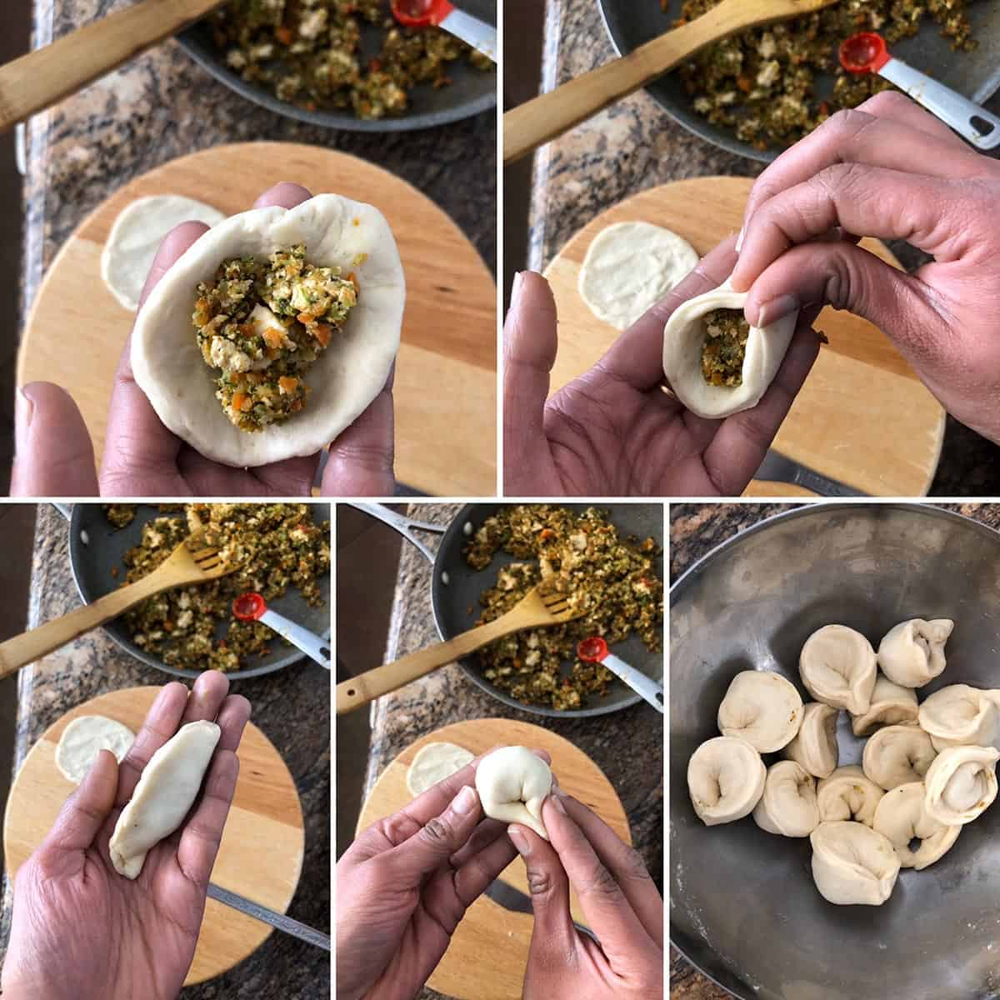

Welcome to My Momo Paradise!
Explore delicious Nepali momos, cooking tips, and recipes you can try at home!


About This Website
This website is dedicated to Nepali cuisine, especially momos. You’ll find step-by-step recipes, tips for making perfect momos, and more culinary inspiration!
Featured Recipes

Vegetable Momo
Soft dumplings filled with fresh vegetables and spices.

Chicken Momo
Juicy chicken momos with traditional Nepali flavors.

Steam Momo
Steam momos, perfect as a snack or appetizer.